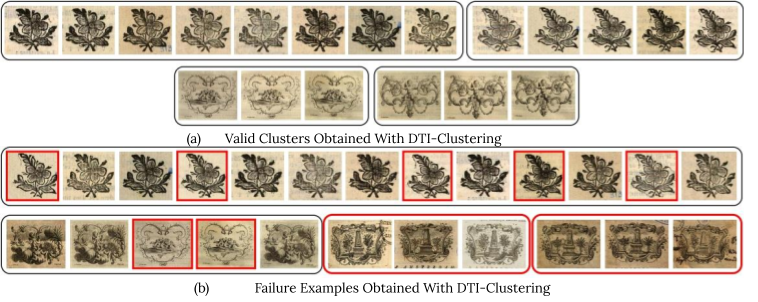
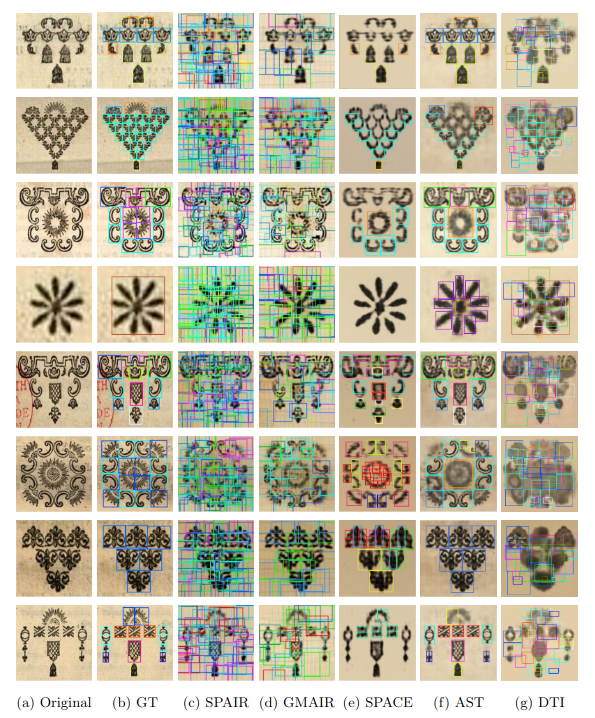
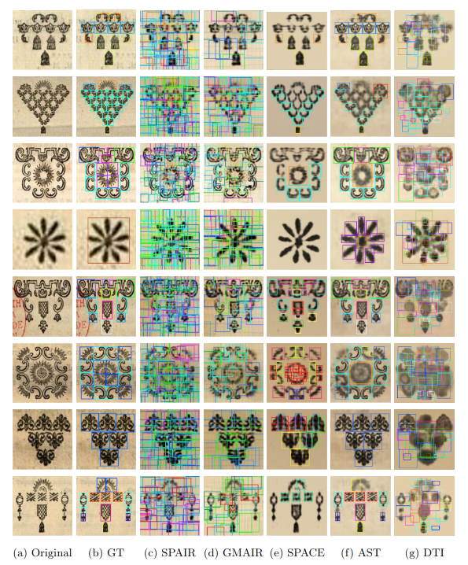

Results
Block ornaments & Clustering
Composite ornaments & Element discovery

Vignettes & Unsupervised change localization

.png)
ICDAR 2024
Dataset & Code ROIi Project ArxivThis paper aims to develop the study of historical printed ornaments with modern unsupervised computer vision. We highlight three complex tasks that are of critical interest to book historians: clustering, element discovery, and unsupervised change localization. For each of these tasks, we introduce an evaluation benchmark, and we adapt and evaluate state-of-the-art models. Our Rey's Ornaments dataset is designed to be a representative example of a set of ornaments historians would be interested in. It focuses on an XVIIIth century bookseller, Marc Michel Rey, providing a consistent set of ornaments with a wide diversity and representative challenges. Our results highlight the limitations of state-of-the-art models when faced with real data and show simple baselines such as k-means or congealing can outperform more sophisticated approaches.
Our Rey's Ornaments dataset is composed of three parts, giving insights into our three tasks:
The clustering dataset, based on woodblock ornaments, includes 167 images of 36 different ornaments, each associated with 3 to 14 occurrences. We found that DTI clustering outperformed state-of-the-art clustering approaches by a large margin on a balanced subset of images, but that the k-means algorithm on the foundation features (e.g., CLIP) was on-par with DTI-clustering on the full imbalanced dataset. However, all algorithms led to less than 80% accuracy in this setting.
The element discovery dataset includes 100 images of composite ornaments containing 1271 elements, from a dictionary of 72 different vignettes. We found all unsupervised element discovery methods to perform poorly. We believe this stresses the potential benefit of our dataset for the community, compared to the synthetic datasets often used to evaluate unsupervised object segmentation methods.
The unsupervised change localization dataset includes 30 types of vignettes with four reference instances and two test instances, a normal one and one where changes have been annotated. We found that direct reconstruction-based approaches, such as congealing or VAE-based, performed poorly compared to human annotations, mostly because they are confused by the variations in inking. We see this as an invitation to better formalize the notion of changes relevant to book historians and design-associated algorithms.

@inproceedings{chaki2024historical,
title={{Historical Printed Ornaments: Dataset and Tasks}},
author={Chaki, Sayan and Baltaci, Sonat and Vincent, Elliot and
Emonet, Rémi and Vial-Bonacci, Fabienne and
Bahier-Porte, Christelleand Aubry, Mathieu and Fournel, Thierry},
booktitle={ICDAR},
year={2024}}
This work was funded by ANR ROIi project ANR-20-CE38-0005. S. Baltaci, E. Vincent and M. Aubry were supported by ERC project DISCOVER funded by the European Union’s Horizon Europe Research and Innovation program under grant agreement No. 101076028 and ANR VHS project ANR-21-CE38-0008. We thank Silya Ounoughi, Thomas Gautrais, and Vincent Ventresque for their work in the collection and annotation of the datasets, and Ségolène Albouy, Raphaël Baena, Syrine Kalleli, Ioannis Siglidis, Gurjeet Singh, Andrea Morales and Malamatenia Vlachou for valuable feedbacks.